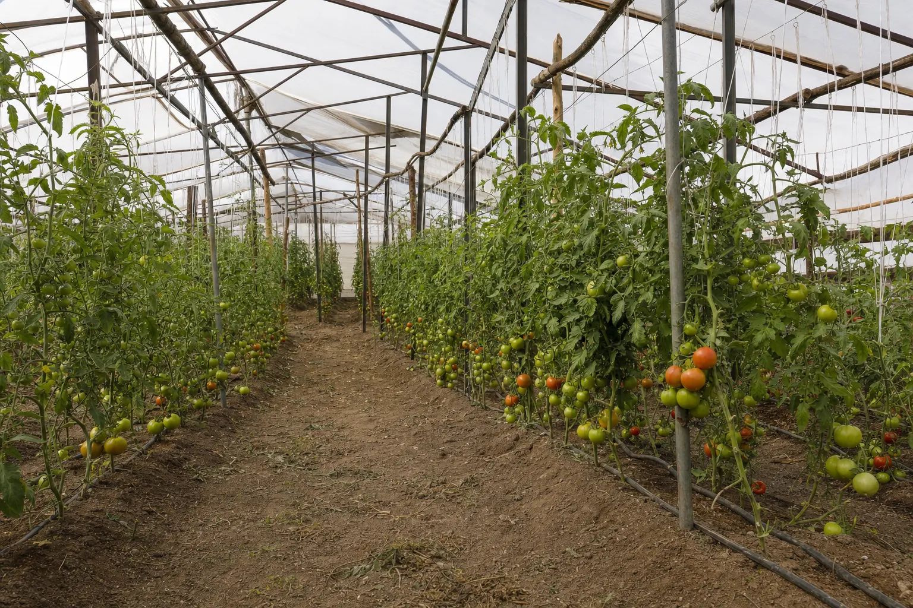

Casos
Cada caso con el mismo formato: qué pasaba, qué se midió, qué se encontró, qué se hizo.
Desuniformidad en brócoli

Situación
Un cultivo de brócoli presentaba plantas de tamaño y desarrollo muy desigual dentro del mismo sector, sin un patrón evidente de plaga ni de suelo. La hipótesis inicial en el predio apuntaba a la fertilización.
Qué se midió
Evaluación de uniformidad del sistema de riego en terreno —coeficiente de uniformidad (CU) y uniformidad de distribución, con aforo de emisores en puntos distribuidos a lo largo y ancho del sector—, más caudal y presión por sector.
Qué se encontró
El problema no era nutricional. La entrega de agua era desuniforme entre puntos del mismo sector, de modo que plantas vecinas estaban recibiendo láminas de riego distintas. La desuniformidad del cultivo reproducía la desuniformidad del riego.
Qué se hizo
Se corrigió el problema en el sistema de riego antes de tocar el programa de fertilización, y se dejó establecido un protocolo de evaluación de uniformidad periódico con los mismos puntos de medición, para poder comparar en el tiempo.
La lección
Ajustar la fertilización sin haber medido el riego habría gastado dinero en el lugar equivocado. Cuando el agua no llega igual, ningún programa nutricional se expresa igual.
Unidad de ensayo propia: tomate y physalis

Situación
Unidad productiva propia de aproximadamente 300 plantas de tomate y physalis, operada como banco de pruebas.
Para qué sirve
Es donde se prueban en escala pequeña las decisiones que después se recomiendan: frecuencias de riego, recetas de fertilización, umbrales de monitoreo fitosanitario y registro de datos por planta. Nada se recomienda a un cliente sin haber entendido antes cómo se comporta.
Qué se registra
Riego aplicado, CE y pH de la solución, desarrollo y estado fitosanitario, con seguimiento continuo.
Por qué importa
Un predio pequeño no es una limitación metodológica. Es donde se puede medir todo.
Si tu caso es el próximo, vas a tener el informe completo de lo que se midió en tu predio.